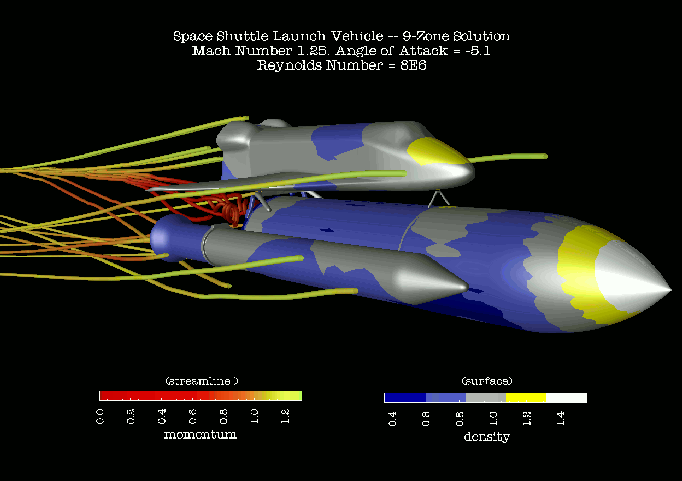
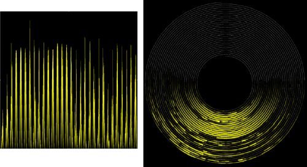
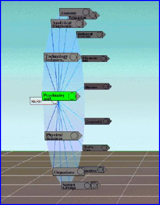
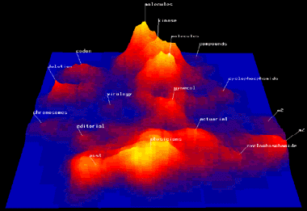
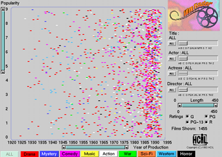

Visualisation is of a holistic nature – it is more than the sum of its parts. It is essentially a cognitive aid that provides inspiration or insight into the previously latent relationships within data. This is called cognitive amplification [CMS99]. This page begins by describing the field’s roots in scientific visualisation before discussing some of the facets that comprise the visualisation of abstract data.
Scientific visualisation
back to topIn 1987 the National Science Foundation (NSF) in the United States published a report, Visualization in scientific computing [MDB87] that paved the way for the fields of scientific and information visualisation. The emphasis on visualisation was (and still is) dominant because the NSF recognised that visualisation provides scientists with a tool that can transform their myriad data into images that allow people to recognise patterns. It was also realised that when visualising simulations of physical systems, the scientists could steer the simulations by changing the parameters used in their calculations and immediately gain visual feedback, whereas previously the calculations would require to be rerun in entirety.
Scientific visualisation occurs when physical data are represented by graphics portraying a physical system, allowing scientists to explore its properties. In this way the visualisation is an external aid supporting the human’s mental model of a system; it helps humans perceive its properties and amplifies cognition [CMS99]. If it were not for apt visualisations then humans could easily fall foul of information overload. If someone were to look at a database table consisting of thousands of records, each representing an object (datum), and each with numerous variables (columns), it would be almost impossible to gain an overview of structure in the data. The virtue of visualisation also enhances communication and teaching because much of the information portrayed cannot be easily communicated in print [DBM89].
Application areas for scientific visualisation include molecular modelling, medical imaging, meteorology, astrophysics, flow analysis and seismology. (see Figures 1 and 2). The common property of the data predominant in such fields is that the variables are inherently spatial and can map directly on to a spatial substrate rendered on a screen.
A typical implementation for scientific visualisation systems is in the form of a modular data-flow architecture where data are piped through a set of modules, each of which has a specific purpose such as carrying out calculations, rendering or controlling parameter values. This piping of data is akin to the familiar UNIX pipe command for controlling the flow of data in inter-process communication [Hae88]. The data-flow architecture allows the modules to be connected in a network that ultimately shapes the application with respect to its input, transformations and graphical rendering. This notion has been extended to allow users to explicitly build the data-flow network, usually through direct manipulation of representations of the modules at the interface, and effectively build their own applications [AT95a, BBB*93, Hae88, UFK*89].

Figure 1: A screenshot from the IBM DX scientific visualisation system [AT95a] depicting an unsteady flow simulation over a space shuttle launch vehicle.

Figure 2: Initial survey results obtained by HMS Scott showing images of the coastline of Sumatra where the earthquake that resulted in the Indian Ocean tsunamis occurred. It is hoped that these visualisations will help scientists understand the cause of such natural phenomena and help predict them in the future.
Information visualisation
back to topAccording to Card, Mackinlay and Shneiderman, the phrase Information Visualisation was first adopted in [RCM89]. In this context information refers to non-physically based abstract data and visualisation is the use of computers to visually render these data in such a way that humans can interactively explore their structure. Information visualisation is inspired by scientific visualisation but in this case the data to be turned into information are abstract and generally have no straightforward physical derivation. Figure 3 provides an example in which the abstract data, in this case search results returned by Google, can be interactively and pictorially summarised according to criteria such as hit rank and web-page size.

Figure 3 A Honeycomb© [Hon04] view of results returned by the Google internet search engine. The visualisation is based upon Johnson and Shneiderman’s treemap [JS91]: a technique designed to utilize space efficiently in the display of hierarchical information structures.
Information visualisations are holistic and have many facets such as interaction mechanisms, spatial representations and abstraction. The fields of Human Computer Interaction (HCI), cognitive, Gestalt and ecological psychology influence them. The types of data and their volume in terms of data set size and dimensionality are key issues in determining their form, and therefore mathematical algorithms play a major part in both data transformations and visual rendering.
Applications of information visualisation include stock market analysis, project management, risk analysis, information retrieval etc. The literature presents many information visualisation techniques and workspaces borne of diverse architectures. Some examples are Visage [RCK*97], IVEE [AW95], Information Visualizer [CRM91] and snap-together visualisation [NS00a, NS00b, Nor01, NS01]. Figure 4 shows an application of visualisation in project management. This tool is part of a commercial issues-tracking package [Nic04] developed by the author for Nickleby HFE Ltd. In this case, the author has used the package to track issues relevant to his PhD research. The visualisation shown here is of a subset of the issues, arranged according to how they are interrelated.

Figure 4: The link map visualisation in nicklebyKIT®. Each node represents an issue raised in respect to the author’s research. Nodes that are deemed as being closely related are linked. The layout was produced by a force-directed placement algorithm for graph-drawing.
Abstraction
back to topAbstraction is a conceptual representation of a physical (or non-physical) object. In computer graphics this abstraction is the visual rendering of properties of the object. This presents less of a problem in scientific visualisation because the properties tend to be physical. However, in information visualisation, the properties of objects tend to have no straightforward derivation from physical space and thus the problem of creating visual representations that appeal to the human’s perception is harder.
There are four prominent considerations in the process of creating visual representations of abstract data. These are dimensionality, which will be discussed in more detail in the next section, data types, Gestalt principles and visual structures. Each of these must be taken into account in order to provide an effective mapping of data onto a perceptual visual form, namely a 2- or 3- dimensional spatial substrate.
Gestalt principles
back to topHumans can interpret visual information very quickly. When we look at a picture, whether static or animated, our visual system allows us to perceive patterns and relationships between components of the picture. For example, a group of points on a scatterplot, which are close together, will be perceived to be a cluster and therefore stand out as one perceptual unit. This is illustrated in Figure 5. It is with regard to such automatic pattern or grouping detection that Gestalt principles exist.
Gestalt is the German translation of the word shape or form and is the inspiration for the Gestalt school of psychology that, in the early part of the 20th century, investigated some perceptual grouping properties and devised the Gestalt laws of grouping [Rom01]. The table, below, provides a categorisation of these laws [CMS99].
| Rule | Description |
|---|---|
| Prägnanz / Figural goodness | Visual perception groups stimuli into a good figure. In this context, good means simple, regular, symmetrical etc. |
| Familiarity | Groups are more likely to appear if they seem familiar or meaningful. |
| Similarity | When presented with several stimuli, those that are similar to one another tend to be perceived as a group. |
| Closure | Contours that are spaced close together tend to be united. |
| Good continuation | A consecutive straight or curved path of close spacing through a set of objects is perceived as a group. |
| Proximity | Objects that are close to one another are perceived as a group / cluster. |
| Common fate | When objects are moving in the same direction they are seen as a group. |
Table 1: Gestalt laws of grouping.
The discovery of these principles means that they can be exploited to produce visualisations where the human can perceive aggregate structures or patterns to form a visual indexing. This means that individual objects within a depiction become easier to find and thus in a good visualisation, exhaustive searching is not required. For example, the spring model [Ead84] was proposed to produce aesthetically pleasing graph layouts but has been widely used to produce layouts of general data objects. This meant that clusters could be formed and thus aid in analysing the intrinsic relationships within data [Cha96].

Figure 5: A scatterplot has the potential to make groups of points appear as individual perceptual units (clusters). For example, the author would assume that in making reference to ‘A’ in the figure, the reader’s attention would be drawn to the upper cluster as a whole and not the single point nearest to the label.
Also, in [WAM01] time series data are mapped onto a spiral in order to make better use of screen real estate and to aid in the detection of cycles. This can be considered as an example of the good continuation rule and is illustrated in Figure 6. However, it should be noted that the groups formed within a visual representation are only useful if they reflect actual relations within the data and are not a side-effect of the underlying rendering process.

Figure 6: An example of the Gestalt principle of good continuation. Both of the above images represent sunshine intensity over an extended period of time, however, the spiral visualisation [WAM01] more clearly shows the day/night periods.
The Gestalt principles of organisation indicate that in a good layout, abstract data can be organised to provide a visualisation that reveals information in the structure and relationships within the data. As a final example on the importance of the Gestalt principles, consider the following figure:

Figure 7: The familiarity rule.
The above figure illustrates that at the heart of Gestalt theory is the proposition that in perception the whole is more than the sum of its parts.
Visual structures
back to topThe mapping of data as abstract objects to symbols within a space is closely related to the Gestalt principles, specifically the similarity rule described above. However, there is more to visualisation than merely grouping similar objects. In the case of using visualisations for analysis and problem solving, individual entities may require comparison. For example, in a frequency domain graph, at what frequencies are the highest magnitudes exhibited? This brings to bear the need to distinguish between the types of variable considered and the spatial substrate in which they are represented. The main categories for variable types are as follows:
| Category | Description |
|---|---|
| Nominal | can only be = or != to other values |
| Ordinal | can obey <, ≤, > and ≥ relations |
| Quantitative | continuous values allowing mathematical axioms of division, multiplication, subtraction and addition |
Table 2: Variable types.
In [CM97], a list of graphical properties is described and the appropriate mapping of variable types to some of these is demonstrated. The graphical properties are marks (including points, lines, areas, surfaces and volumes), position in space, and retinal properties, including shape, size, orientation etc. It has been established that certain variable types are better mapped onto specific graphical properties than others, i.e. some properties are more effective encoders of information than others. For example, in [CMS99] it is stated that greyscale is better for encoding and comparing nominal variables than quantitative variables.
The careful use of graphical properties is essential in creating a visualisation that communicates information to the user. There have been a number of models proposed which aim to classify data by the type of visualisation that could best convey information. Several of these are described in [Rob99] where an algebraic method is proposed to describe visualisations in order to guide the visual designer in creating the most effective depiction of abstract data.
Data types
back to topWhere the type of variables considered in a visualisation can suggest the most appropriate representative glyphs and symbols, the overall intrinsic structure of data (internal relationships and dimensionality) can suggest the utilisation of pre-existing visualisation types. As an example, temporal data may lend itself to being presented as a Gantt chart.
In [Shn96], Shneiderman describes a Task by Data Type Taxonomy whereby a designer can choose between given examples of visualisations depending upon the type of data to be processed. The seven data types Shneiderman outlines are:
- 1-dimensional
- 2-dimensional
- 3-dimensional
- multi-dimensional
- temporal
- tree
- network
This taxonomy was devised with Shneiderman’s Visual Information seeking mantra [Shn96] in mind: “Overview first, zoom and filter, then details-on-demand.” Shneiderman suggested that each component of the mantra is one of the salient tasks in visual information seeking.
The major point of this section is to show that when a data type is known, there may already be tried and tested techniques for presenting a visualisation and therefore provide a basis for discussion or prevent the designer from ‘re-inventing the wheel’ for new tools.
Dimensionality
back to topDimensionality pertains to the number of attributes or variables that are to be considered for every object within a visualisation. For example, a geographical position can be described by two variables: latitude and longitude. Dimensionality is an important consideration in information visualisation because humans can only readily perceive structures within a low number of dimensions. If a set of objects of three dimensions or less is to be visualised, then the dimensions can be mapped directly onto a set of orthogonal axes. Considering the example above, a set of geographical positions may be displayed by mapping longitude to the x-axis and latitude to the y-axis, while maintaining the proportional distance interrelationships between points. However, there are many cases where the entities to be visualised have many dimensions and therefore there is no direct mapping to a 2- or 3-dimensional substrate. As an example, consider the visualisation of a corpus of textual documents where each unique word contained within the set is regarded as a dimension. In this case the dimensionality of the space in which the objects reside can go into the tens of thousands.
In this section some of the techniques that have been applied to the visualisation of low (≤3) and high (>3) dimensional data will be discussed.
1-dimensional visualisation
back to topA common example of 1-dimensional data is a list. Lists may be composed of any variable types, but in this section strings represented as ordinals will be considered. In [Eic94a] a visualisation tool called SeeSoft is presented where lines of source code are greatly visually compressed into narrow rectangles along a folding axis (see Figure 8). The author of [Eic94a] describes this method as reduced representation and claims that up to 50,000 lines of code can be displayed within one screen. The beauty of this approach is that the reduced representation holds all of the spatial pattern information within the data set in the same way as the original text, but reduced in size so that an overview is gained that maintains recognisable groupings of the unreduced text. The system also offers interactive features such as a magic lens to allow users to magnify and read sections of code. The retinal variable, colour, is also used to map statistical information such as modification requests to lines of code. In this way, the user can scan the overview of the code and automatically process the colour information to detect patterns and areas of interest for deeper examination. It may be argued that one of the contributors to the effectiveness of this visualisation is the familiarity rule of the Gestalt principles. The reduced representation of the source code does not distort the proportional natural layout of the data and therefore sections (groups) of lines may remain recognisable. The SeeSoft tool is also a good example of a visualisation of 1-dimensional data because it exhibits the use of a folding axis. A folding axis is an axis that is designed to use available space more efficiently by folding back on its self at certain points (again, see Figure 8). It is a 2-d method for visualising 1-d data and therefore can be considered as a ‘dimension expansion’ technique. This technique can be applied to the visualisation of data of dimensionality d > 1, but it is most effective when variables of only one dimension are to be depicted.

Figure 8: An example of reduced representation. The figure depicts two source code modules, each of which is on a folding axis.
2-dimensional visualisation
back to topWhen dealing with data of two dimensions, the visualisation process is often based upon a simple direct mapping onto two axes. The most common form of a 2-dimensional visualisation is a geographical map where locations are placed according to the longitude and latitude variables.
Data that are comprised of two-variable entities are described as planar. This is because they map directly onto a flat 2-dimensional surface or plane. However, an interesting twist in the display of a 2-dimensional layout was proposed in [MRC91] where a ‘perspective wall’, shown in Figure 9, is described to transform 2-d layouts into a 3-d representation. The basic idea is that 2-d layouts with large aspect ratios can be distorted so that the central part of the layout is entirely visible to the user while the far left and right portions appear to stretch off into the distance. This is a technique inspired by the bifocal lens [SA82, ATS82]. This serves the purpose of affording the user detail and overview simultaneously and is closely related to the ideas of Furnas [Fur86]. The perspective wall is also an example of a type of folding axis in the 2-d case, where the two dimensions of the plane are folded in the direction of the third dimension (away from the user).

Figure 9: The ‘perspective wall’ distorts a 2-d layout so that the focus at the centre of the screen is most legible while the remainder of the layout is peripheral. The user can scroll potentially interesting parts of the layout to the fore and still be afforded the context of neighbouring regions.
3-dimensional visualisation
back to top3-dimensional visualisation is most prominent in the field of scientific visualisation where collective bodies of 3-d physical data are often the basis of analysis. When a physical object is modelled it is useful to render it in three dimensions to conform to the mental model of the person who is viewing it. Examples include the visualisation of molecular structures and the physiology of the human body.
Although 3-dimensional abstract data can be directly mapped into a 3-dimensional visualisation space, for example a 3-d bar chart could be used to depict a company’s profit for different products across various cities, abstract data often gains little from this embellishment. This may be because there is no inherent physical mental model to sustain. On the other hand, there have been attempts to use a 3-dimensional space to navigate complex data structures. In [HK97], a system called Cat-a-Cone consists of a hierarchical ConeTree [RMC91] which is displayed in three dimensions to make better use of screen real estate (see Figure 10). In [Ren94] a tool named Galaxy of News organises textual information in a 3-d space where similarity between texts is reflected by their proximity to one another. As the user navigates through the space semantic zooming is employed to show or elide text and detail, depending upon the user’s position in the space. However, there can be serious disadvantages to rendering abstract data in three dimensions. A problem exhibited by the Cat-a-Cone system is that the nodes of the tree can become occluded and therefore the amount of information to be gleaned at any one time is reduced. Also, in the Galaxy of News system, the lack of a referential horizon and ground plane can cause the user to be disoriented. In the words of Chalmers [Cha93], “Our skills in…mental model-making, as honed on our everyday ‘2.1D’ world, become more difficult to employ.” In the context of this quote, Chalmers describes a metaphor of a 2.1-d landscape for representing the distribution of a corpus of documents. This type of visualisation can be called an information landscape or themescape [WTP*95] and is based upon the premise that the metaphor can provide landmarks and other natural aids to allow the user to build a mental map of the corpus. Figure 11 depicts a visualisation based upon Wise’s themescape [WTP*95].

Figure 10: Cat-a-Cone [HK97] arranges each level of a hierarchical categorisation scheme in a 3-d view to utilise space efficiently. This technique, like the ‘perspective wall’, uses perspective distortion to clarify the focus (the node closest to the viewer) while maintaining the context of the adjacent nodes.
Although 3-dimensional visualisations can be impressive, they do, in general, create cumbersome overheads. They require more powerful hardware and require more intensive processing in the visual transformations; navigation is more complex because at least six degrees of freedom of movement may be required and it is more difficult to incorporate textual objects that are often predominant in information visualisation [CMS99].

Figure 11: A screenshot from Spire [Wis99] – a tool based upon Wise’s themescape [WTP*95]. A document corpus is represented via a landscape metaphor in which the themes that run through the collection are mapped to visual attributes.
4+ -dimensional visualisation
back to topIn statistical analysis, data sets that are comprised of objects consisting of more than three variables are described as multivariate or hypervariate and are considered as n-attribute items dispersed within an n-dimensional space. Thus, in information visualisation these generally come under the rubric of the multidimensional. There has been a great deal of work concentrating on the visualisation of multidimensional data, spurred on by the fact that there is no possible way of directly mapping multidimensional objects onto a set of visually perceptive axes. However, there are some shortcuts available to multidimensional data at the lower end of the scale. For example, three dimensions of 4-dimensional data may be mapped onto points in a 3-d substrate and the fourth dimension mapped to colour, or shape, but beyond this, more innovative techniques must be derived.
Spoerri [Spo93] proposes a tool called InfoCrystal (Figure 12) for querying and visualising results for information retrieval. The idea is to generalise the Venn diagram to discretely display the distribution of objects of more than three dimensions. This system is intuitive because of the familiarity with the Venn diagram; however, as the number of dimensions to be depicted increases the complexity of the graphics soon becomes overwhelming.

Figure 12: An InfoCrystal [Spo93] representing three search criteria or inputs, A, B and C and all possible Boolean queries in normal conjunctive form. The interior icons can be embellished to show the results of submitting the respective queries to a document collection. In this example, these inputs define a 3-d search space, however, Spoerri has demonstrated the application of InfoCrystals to more than three inputs.
Tweedie et al. [TSDS96] present the ‘Prosection Matrix’. This idea stems from the statistical technique of representing all possible combinations of pairs of variables for a data set as a matrix of scatterplots. They embellished this technique by adding an interaction technique called brushing [BC87] that allows selected points in one scatterplot to be highlighted in others. In this case the brushing entails using sliders (one for each dimension/parameter) to define selected parameter ranges so that points in one scatterplot, depicting the relationship between p1 and p2 for instance, can be highlighted according to the selected range of p3 for example. Hence the name prosection was derived from projection of a section. This technique, like that in InfoCrystal, also becomes intractable for visualising data of many dimensions because the number of scatterplots required is equal to N(N – 1)/2 where N is the number of dimensions.
As the dimensionality of data increases, the plausible techniques for clearly depicting the influence of all of the attributes falls sharply in number and in effectiveness. It is partly for this reason that methods such as Multidimensional Scaling (MDS), Principal Components Analysis and a plethora of clustering algorithms exist. Specifically, in information visualisation, their role is to map the objects from their high-dimensional space to points in two or three dimensions.
Lin et al. [LSM91] take advantage of Kohonen’s self-organising feature map (SOM) [KKL*00], to map high-dimensional textual documents onto a discrete 2-d grid. As stated earlier, a corpus of textual documents has dimensionality roughly equal to the number of unique terms contained within, and therefore it is impossible to directly map the documents as points in this high-dimensional space into two or three dimensions. Lin et al. proposed that the SOM could be used to create concept areas in the plane of the SOM which would effectively partition the corpus into classes and thus give insight into the topology of the corpus at a glance (see Figure 13).

Figure 13: An example of the output of a SOM, depicting the concept areas relating to electronics.
The only drawback with this approach is that only the topology of the corpus is communicated. Relationships between individual documents cannot be visualised as only the cluster centres are depicted and the discrete grid-like output of the SOM ensures that these are all evenly spaced.
In a paper by Rodden et al. [RBSW01], another discrete visualisation maps images onto a grid to aid in browsing. In this case an unspecified MDS algorithm is used to create a continuous 2-d layout of objects so that similar images are placed close together, and then one of several algorithms proposed by Basalj [Bas00] is utilised to discretise the space in order to remove occlusions. This approach may be considered as an alternative heuristic to the SOM.
Interactivity
back to topIt is difficult to communicate the intrinsic and latent relationships within high-dimensional abstract data through a single static representation. For this reason, mechanisms which afford the user interactive control over the representation are required to unlock the information that can only be revealed in dynamic visualisations.
Affordance and appropriation
back to topAn important aspect that blends interactive visualisation with the premise of good graphical user interface (GUI) design is the issue of affordance. Affordance may be defined as the ability for an object to be perceived by the user as usable according to his or her physical and mental abilities. The user quickly understands the use of a device for a given function or activity. When affordance exists in the design of an interface, whether it is physical or in the digital domain, the resulting system is easier and maybe even pleasant to use [Nor88]. Sometimes affordances can be accidental, in which case the user may appropriate the functions to his or her own ends in different ways to those the interface designer intended or even considered. From the perspective of interface evaluation via observation of use, this can be advantageous in offering insight into the correct way to implement complex functions.
Time
back to topAnother important consideration in the design of interactive systems is the speed of interaction. In [CRM91] three categories of interaction speed are described:
| Time | Category | Description |
|---|---|---|
| 0.1 seconds | perceptual processing | Stimuli presented within 0.1s of each other are perceived to be a single stimulus. An example of this is in animations comprised of several stills. |
| 1 second | immediate response | The minimum time in which a user may respond to stimuli. |
| 10 seconds | unit task | Described as the time taken for a simple action, requiring minimal cognition. |
Table 3: Categories of interaction speeds.
Inspired by the interaction between humans, Robertson et al. [RCM89], proposed an interface architecture called the cognitive coprocessor to match the impedance between the user and an automated information agent. Essentially, the response times of the system should match the capabilities and expectations of the user when reacting to stimuli and carrying out elemental tasks.
Shneiderman [Shn83] describes Direct Manipulation, which shows that a short response time for visual feedback is very important. Direct manipulation can be described as a metaphor for manipulating graphical objects as if using one’s own hands, in order to conform to the user’s expectations of what should happen. For example, when a file is dragged over the recycle bin on a Windows OS desktop, and then let go, the file disappears as if the file has fallen into the bin. Shneiderman also describes the supplanting of textual query languages (in the user interface) such as SQL with direct manipulation in the form of Dynamic Queries [Shn94]. Dynamic queries provide immediate feedback during query formulation by updating results as the queries are built.
From the above, it can be considered that direct manipulation mechanisms must react to the user’s actions within 0.1 seconds for the perceived continuity of physical motion.
Interaction mechanisms
back to topIn a paper by Shneiderman [Shn96], his visual information seeking mantra is described: “Overview first, zoom and filter, then details-on-demand”. According to Shneiderman this indicates the basic elements required in an interactive visualisation when seeking information. However, this implies that visual information seeking is a sequential process where a series of views are presented in isolation. The following sub-sections describe interaction mechanisms that have been developed to integrate such views so that overview and detail can be presented simultaneously, and zooming and filtering can be applied within the context of the original view.
Overview plus detail
An overview of a visual representation is important to afford the user navigation and pattern detection. As a result, searching can be enhanced. However, both the whole overview and the finer-grained details of local data structures are often required to facilitate analysis and evaluation of smaller portions of data. The overview enables a high-level view to help orient the user while (s)he drills down into the details.
A typical guise of overview plus detail is the zoom function. In Eick’s SeeSoft tool [Eic94a], a separate window can be shown over the reduced representation in order to allow the user to read individual lines of code. The advantage of this is that the user may perceive where he or she is within the overview and also gain finer details of that area. This, applied in SeeSoft, is an example of focus plus context and mimics the human’s visual system where the bandwidth is split between the peripheral view and the higher resolution focus [CMS99]. This allows people to understand something by its context as well as its detail within the context.
Two everyday examples of overview + detail include Windows Explorer – the overview is provided by a treeview while the detail is shown as a set of file and folder icons in a separate pane – and Adobe Acrobat [Ado04] where the thumbnail view gives a (reduced representation) overview of a PDF file, next to the detailed text. North, Shneiderman and Plaisant [NSP96] contributed a more novel application in the visualisation of a medical digital library. The overview is a longitudinal cut of a human body and the detail view consists of an axial cross-section (see Figure 14).

Figure 14: North et al.’s Visible Human Explorer interface. The overview of the human body is tightly coupled with axial detail view. The user can sweep a horizontal line across the overview to dynamically update the detailed cross-section view.
The following subsection is inspired by the problem of overview plus detail and describes some of the methods for achieving it.
Focus plus context
Focus plus context is related to overview plus detail by the fact that the context is provided by the overview and the focus is on the finer detail. A classic example of the focus plus context method is Furnas’s Generalised Fisheye Views [Fur86]. In this paper, Furnas defines a degree of interest (DOI) function that is used to assign a number reflecting the importance to the user of an object within a visual structure, given his or her current task. This number can then be used to reduce or remove detail from less important areas of the view.
This is an example of a distortion technique similar to the Perspective Wall [MRC91]. Another example of view distortion for focus plus context is the hyperbolic tree [LRP95], where it is proposed that by mapping large hierarchical trees onto a hyperbolic plane, the hyperbolic geometry will create a fisheye-like distortion. The part of the plane that is the least distorted (more detailed and larger) is that which is closest to the viewpoint in the centre of the screen, i.e. the focus, whereas other areas are more distorted and shrink the embedded objects as the distance from the focus increases. Direct manipulation is used here to rotate the hyperbolic plane and thus move the focus, and as a result very large tree hierarchies may be displayed.
Zooming is another well established technique for gaining insight into detailed areas of a view while maintaining the context. There are two predominant types of zoom mechanisms: semantic and logical. Logical zooming lends itself more to our familiar notion of zooming as it describes the perspective notion of objects being larger when closer and smaller as the distance between them and the viewer increases. For this reason, logical zooming can be described as physical or geometric because our psychophysical perspective pertains mainly to changes in object size and colour saturation for this type of zooming. The SeeSoft tool described above makes use of logical zooming.
On the other hand, semantic zooming, which may or may not contain aspects of logical zooming, pertains more to the idea that as the area of focus approaches objects, the level of abstraction is changed – mappings of data attributes to graphical properties change. A user-interface proposed by Bederson and Hollan called Pad++ [BH94] provides semantic zooming. Here, direct manipulation of a focus point is used to provide additional details to objects that appear under the focus. The Magic Lens [FS95] is another example of the zooming paradigm and has been demonstrated as a way to supplant textual database querying because multiple lenses (focus points) can be used in conjunction to form Boolean expressions that filter or abstract details of the objects being visualised.
This now leads on to describing filtering within an information space. As stated earlier it is difficult to map high dimensional abstract data into a single static view. As a result MDS techniques have been devised to reduce the dimensionality in order to be able to display high-dimensional objects in a 2- or 3-d point space, usually preserving some distance function. Although this provides an overview of the data set’s distribution, the contribution of individual attributes can be hard to interpret in these scatterplot-like displays – some variables may be more dominant than others. It is for this reason that filtering comes into its own as a means for drilling down into the data to help find latent relationships. As described, the magic lens is one means but there are many other GUI components that may afford the filtering process. One such component is the slider control, which provides an example of direct manipulation for view transformation. In [CM97] it is stated that using sliders, a user can take into account additional variables without these being mapped to retinal properties.
In essence, a slider is a GUI control that allows the user to define ranges (double-ended sliders) or to select individual values or thresholds. Eick [Eic94b] describes the use of sliders to filter or highlight items within a view as determined by the value or range of values selected by the slider. An example of which can be found in Ahlberg and Shneiderman’s filmfinder [AS94a] as shown in Figure 15. In filmfinder, the range selected in a double-ended slider maps to a zoom function, while the position of the range, along the slider’s scale, maps to a pan function.
Eick then goes on to describe graphical embellishments such as using the space inside the slider to depict the distribution of the data being analysed (see Figure 16) and thereby provide clues in information seeking.

Figure 15: Double-ended sliders to the left and bottom of the plot in filmfinder allow the user to zoom and pan along the two axes, essentially filtering the view.

Figure 16: A double-ended slider with a histogram, showing a range selection.
Tweedie et al. [TSDS96] also make use of this type of enhanced slider. In their influence explorer tool, where histograms are used in conjunction with sliders, the sliders are all interlinked so that when the selection of one slider is changed, the effect can be seen by highlighting sections of the histograms of other sliders.
Conclusions
back to topIn this page some of the techniques used in information visualisation, and their motivations, have been described. Information visualisation serves as a key to unlock the black box of abstract data, to reveal the interrelationships and salient properties. It is holistic in nature – it is more than just a collection of glyphs, axes and graphical structures. Through abstraction, visualisation can help the user create mental models of the data and gain insight into their structure. Through interaction, the user is prompted to ask questions and then be provided with the answers. It can afford the user navigation and browsing of abstract data whose elements reside in a bewildering number of dimensions. It is envisaged that in the future many more interesting and novel devices will be devised to aid the user’s perception of complex data and their interrelationships.
Visualisation relies upon intuitive reduction of data so that their representation is simplified and therefore information is easier to convey. A very popular means of attaining this is via cluster analysis. By considering data as points in a data space, clustering algorithms can find contiguous groups of closely related points thus reducing the representative size of the data set to the number of clusters. Another approach is to reduce the dimensionality of the data so that it conveys as much of the original information as possible using a small number of derived dimensions. Clustering and dimension reduction algorithms often go hand-in-hand to create hybrid solutions that provide an efficient and effective basis for visualisation.
References
back to top| [Ado04] | Adobe Acrobat Reader 5.0. http://www.adobe.com/acrobat (2004). |
| [AS94a] | Ahlberg C., Shneiderman B.: Visual Information Seeking using the FilmFinder. Proceedings of ACM CHI'94 Conference on Human Factors in Computing Systems 2, (1994), 433. |
| [AT95a] | Abram G., Treinish L.: An Extended Data-Flow Architecture for Data Analysis and Visualization. Computer Graphics 29, 3 (May 1995). 17–21. |
| [ATS82] | Apperley M. D., Tzavaras I., Spence R.: A Bifocal Display Technique for Data Presentation. Proceedings of Eurographics’82, Conference of the European Association for Computer Graphics (1982), 27–43. |
| [AW95] | Ahlberg C., Wistrand E.: IVEE: An Information Visualization and Exploration Environment. Proceedings of InfoVis '95, IEEE Symposium on Information Visualization (October 1995), 66–73. |
| [Bas00] | Basalaj W.: Proximity Visualisation of Abstract Data. PhD thesis, University of Cambridge Computer Laboratory (2000). |
| [BBB*93] | Brodlie K., Brankin L., Banecki G., Gay A., Poon A., Wright H.: Grasparc–A Problem Solving Environment Integrating Computation and Visualization. Proceedings of IEEE Visualization '93, IEEE Computer Society Press (1993), 102–109. |
| [BC87] | Becker R., Cleveland W.: Brushing Scatterplots. Technometrics 29, 2 (1987), 127–142. |
| [BH94] | Bederson B. B., Hollan J. D.: Pad++: A Zooming Graphical Interface for Exploring Alternate Interface Physics. Proceedings of UIST’94, ACM Symposium on User Interface Software and Technology (1994), 17–26. |
| [Cha93] | Chalmers M.: Using a Landscape Metaphor to Represent a Corpus of Documents. Proceedings of COSIT '93,European Conference on Spatial Information Theory (1993), 377–390. |
| [Cha96] | Chalmers M.: A Linear Iteration Time Layout Algorithm for Visualising High-Dimensional Data. Proceedings of IEEE Visualization (1996), 127–132. |
| [CM97] | Card S. K., Mackinlay J. D.: The Structure of the Information Visualization Design Space. Proceedings of InfoVis’97, IEEE Symposium on Information Visualization (1997), 92–99. |
| [CMS99] | Card S. K., Mackinlay J. D., Shneiderman B.: Information Visualisation – Using Vision to Think. Morgan Kaufmann, 1999. |
| [CRM91] | Card S. K., Robertson G. G., Mackinlay J. D.: The Information Visualizer, an Information Workspace. Proceedings of CHI `91, ACM Human Factors in Computing Systems Conference (1991), 181–188. |
| [DBM89] | DeFanti T. A., Brown M. D., McCormick B. H.: Visualization: Expanding Scientific and Engineering Research Opportunities. IEEE Computer 22, 8 (1989), 12–25. |
| [Ead84] | Eades P.: A Heuristic for Graph Drawing. Congressus Numerantium 42 (1984), 149–160. |
| [Eic94a] | Eick S.: Graphically Displaying Text. Journal of Computational and Graphical Statistics 3, 2 (1994). 127–142. |
| [Eic94b] | Eick S. :Data Visualization Sliders. Proceedings of UIST '94, ACM Symposium on User Interface Software and Technology, ( November 1994), 119–120. |
| [FS95] | Fishkin K., Stone M. C.: Enhanced Dynamic Queries via Movable Filters. Proceedings of ACM Conference on Human Factors in Computing Systems (May 1995), 415–420. |
| [Fur86] | Furnas G. W.: Generalized Fisheye Views. Proceedings of the ACM Conference on Human Factors in Computing Systems (1986), 16–23. |
| [Hae88] | Haeberli P.: ConMan: A Visual Programming Language for Interactive Graphics. Computer Graphics 22, 4 (1988), 103–111. |
| [HK97] | Hearst M., Karadi C.: Cat-a-Cone: An Interactive Interface for Specifying Searches and Viewing Retrieval Results using a Large Category Hierarchy. Proceedings of 20th Annual International ACM/SIGIR Conference (July 1997), 246–255. |
| [Hon04] | Honeycomb. http://www.hivegroup.com (2004). |
| [JS91] | Johnson B., Shneiderman B.: Tree-Maps: A Space-Filling Approach to the Visualization of Hierarchical Information Structures. Proceedings of IEEE Visualization ’91 Conference (1991), 284–291. |
| [KKL*00] | Kohonen T., Kaski S., Lagus K., Salojrvi J., Paatero V., Saarela A.: Self Organization of a Massive Document Collection. IEEE Transactions on Neural Networks 11, 3 (2000), 574–585. |
| [LRP95] | Lamping J., Rao R., Pirolli P.: A Focus+Context Technique Based Upon Hyperbolic Geometry for Visualizing Large Hierarchies. Proceedings of CHI’95, ACM Conference on Human Factors in Computing Systems (1995), 401–408. |
| [LSM91] | Lin X., Soergel, D., Marchionini, G : A Self-Organizing Semantic Map for Information Retrieval. Proceedings of the Annual International ACM SIGIR Conference on Research and Development in Information Retrieval (1991), 262–269. |
| [MDB87] | McCormick B. H., DeFanti T. A., Brown M. D., eds.: Visualization in Scientific Computing. Computer Graphics 21, 6 (November 1987). |
| [MRC91] | Mackinlay J. D., Robertson G. G., Card S. K.: The Perspective Wall: Detail and Context Smoothly Integrated. Proceedings of CHI’91, ACM Conference on Human Factors in Computing Systems (1991), 173–179. |
| [Nic04] | Nickleby HFE Ltd. NicklebyKIT. http://www.nickleby.com (2004). |
| [Nor01] | North C.: Multiple Views and Tight Coupling in Visualization: A Language, Taxonomy, and System. Proc. CSREA CISST 2001 Workshop of Fundamental Issues in Visualization (2001), 626–632. |
| [Nor88] | Norman D. A.: The Psychology of Everyday Things. Basic Books, 1988. |
| [NS00a] | North C., Shneiderman B.: Snap-Together Visualization: Can Users Construct and Operate Coordinated Visualizations? International Journal of Human-Computer Studies 53, (2000), 715–739. |
| [NS00b] | North C., Shneiderman B.: Snap-Together Visualization: A User Interface for Coordinating Visualizations Via Relational Schemata. Proceedings of Advanced Visual Interfaces (2000), 128–135. |
| [NS01] | North C., Shneiderman B.: Component-Based, User-Constructed, Multiple-View Visualization. Proc. ACM CHI 2001 (2001), 201–202. |
| [NSP96] | C. North. B. Shneiderman and C. Plaisant. User Controlled Overviews of an Image Library: A Case Study of the Visible Human. Proceedings of DL’96, ACM Conference on Digital Libraries. 74–82. 1996. |
| [RBSW01] | Rodden K., Basalaj W., Sinclair D., Wood K.: Does Organisation by Similarity Assist Image Browsing? Proceedings of the SIGCHI on Human Factors in Computing Systems (2001), 190–197. |
| [RCK*97] | Roth S. F., Chuah M. C., Kerpedjiev S., Kolojejchick J., Lucas P.: Towards an Information Visualization Workspace: Combining Multiple Means of Expression. Human-Computer Interaction Journal 12, 1 (1997), 131–185. |
| [RCM89] | Robertson G. G., Card S. K., Mackinlay J. D.: The Cognitive Coprocessor Architecture for Interactive User Interfaces. Proceedings of the ACM SIGGRAPH Symposium on User Interface Software and Technology (1989), 10–18. |
| [Ren94] | Rennison E.: Galaxy of News: An Approach to Visualizing and Understanding Expansive News Landscapes. Proceedings of UIST’94, ACM Symposium on User Interface Software and Technology (1994), 3–12. |
| [RMC91] | Robertson G. G., Mackinlay J. D. Card S. K.: Cone Trees: Animated 3D Visualizations of Hierarchical Information. Proceedings of CHI’91, ACM Conference on Human Factors in Computing Systems (1991), 189–194. |
| [Rob99] | Roberts J. C.: Display Models for Visualization. Proceedings of the International Conference on Information Visualization (July 1999), 200–206. |
| [Rom01] | Rome E.: Simulating Perceptual Clustering by Gestalt Principles. 25th Workshop of the Austrian Association for Pattern Recognition ÖAGM / AAPR (June 2001), 191–198. |
| [SA82] | Spence R., Apperley M. D.: Data Base Navigation: An Office Environment for the Professional. Behaviour and Information Technology 1, 1 (1982), 43–54. |
| [Shn83] | Shneiderman B.: Direct Manipulation: A Step Beyond Programming Languages. IEEE Computer 16, 8 (1983), 57–68. |
| [Shn94] | Shneiderman B.: Dynamic Queries for Visual Information Seeking. IEEE Software 11, 6 (1994), 70–77. |
| [Shn96] | Shneiderman B.: The Eyes Have it: A Task by Data Type Taxonomy for Information Visualization. Proceedings of IEEE Workshop on Visual Languages (1996), 336–343. |
| [Spo93] | Spoerri A.: InfoCrystal: A Visual Tool for Information Retrieval and Management. Proceedings of CIKM Conference (1993), 11–20. |
| [TSDS96] | Tweedie L., Spence R., Dawkes H., Su H.: Externalising Abstract Mathematical Models. Proceedings of ACM Conference on Human Factors in Computing Systems (1996), 406–412. |
| [UFK*89] | Upson. C., Faulhaber T. Jr., Kamens D., Laidlaw D., Schlegel D., Vroom J., Gurwitz R., van Dam A.: The Application Visualization System: A Computational Environment for Scientific Visualization. IEEE Computer Graphics and Applications (July 1989), 30–42. |
| [WAM01] | Weber M., Alexa M., Mueller W.: Visualizing Time Series on Spirals. Proceedings of InfoVis’01, IEEE Symposium on Information Visualization (2001), 7. |
| [Wis99] | Wise J. A.: The Ecological Approach to Text Visualization. Journal of the American Society for Information Science, Special Issue on Integrating Multiple Overlapping Metadata Standards 50, 13 (November 1999), 1224–1233. |
| [WTP*95] | Wise J., Thomas J., Pennock K., Lantrip D., Pottier M., Schur A., Crow V.: Visualizing the Non-Visual: Spatial Analysis and Interaction with Information from Text Documents. Proceedings of InfoVis’95, IEEE Symposium on Information Visualization (1995). 51–58. |